energyRt ships autoplot() methods (and,
where natural, matching plot() methods) for most of its
building-block classes. They turn an object into a ggplot,
so the result can be themed and extended with + layers like
any other ggplot.
| Class | What the plot shows |
|---|---|
calendar |
the sub-annual time structure (stacked timeframe rows) |
horizon |
the planning intervals / milestone years |
commodity |
emission factors (@emis) — one or several
commodities |
supply, demand, import,
export
|
level parameters over years (given data + interpolation) |
weather |
a sub-annual capacity/availability factor (heatmap, line or area) |
Calendars
The example calendars dataset holds a few ready-made
calendar objects.
data("calendars", package = "energyRt")
names(calendars)
#> [1] "season_dn" "d365"
#> [3] "utopia_annual" "utopia_seasons"
#> [5] "utopia_s4h24" "utopia_m12h24"
#> [7] "d365_h24" "d365_h24_subset_1day_per_month"autoplot() (or the equivalent plot()) draws
each timeframe as a row of rectangles sized by each slice’s share of the
year:
autoplot(calendars$season_dn)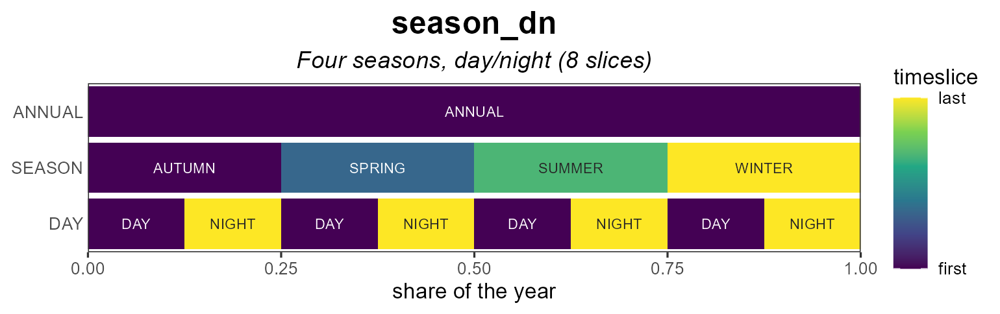
Coloring
For fill = "order" (the default) the
color_pattern controls the gradient. "within"
(default) colours each level over its own slices — so
an hourly row shows a full h00→h23 cycle
repeating every day, while "global" colours by absolute
chronology across the whole year.
autoplot(calendars$d365_h24) # within (default)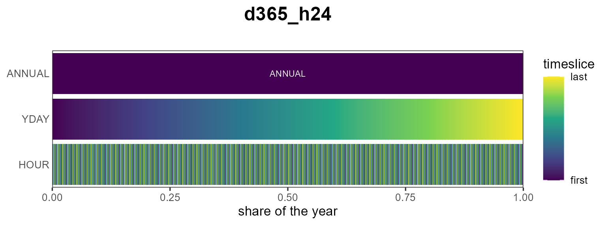
autoplot(calendars$d365_h24, color_pattern = "global")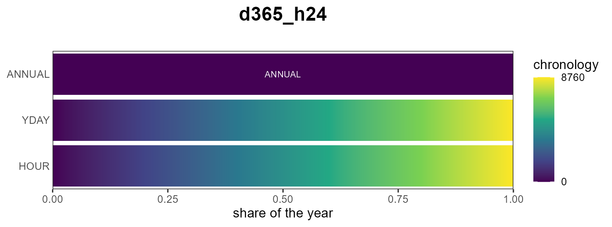
Other fill metrics are the slice "share" and
"weight":
autoplot(calendars$season_dn, fill = "share")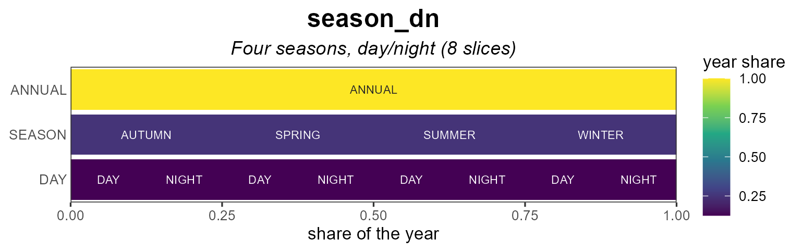
Labels
Each cell can be labelled by its individual level name
("name", the default,
e.g. h00…h23) or by the full slice path
("slice", e.g. d001_h00). Label text
auto-contrasts with the fill; override it with
label_color.
# zoom (see below) so labels are legible
autoplot(calendars$d365_h24,
show_leafs = list(YDAY = "d001", HOUR = 1:24),
label_by = "name")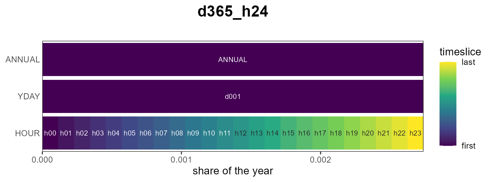
Zooming with show_leafs
show_leafs selects which slices to draw. Pass a named
list to filter per timeframe level (character = slice names, numeric =
positions among that level’s slices), or an unnamed vector to filter the
finest level directly.
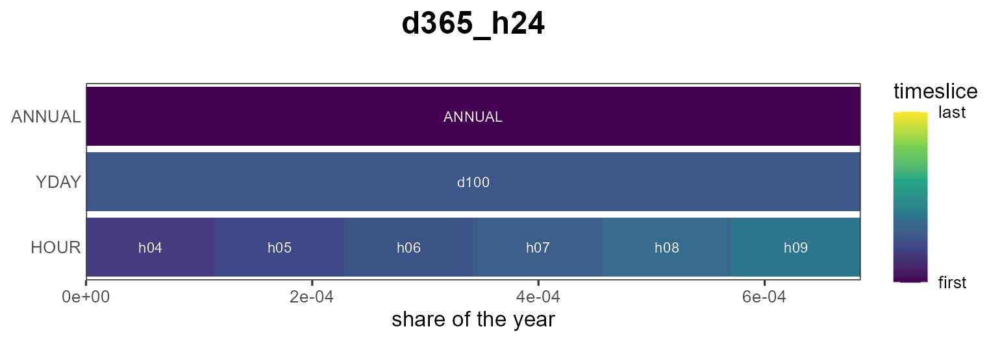
# the first 48 leaf slices (first two days)
autoplot(calendars$d365_h24, show_leafs = 1:48)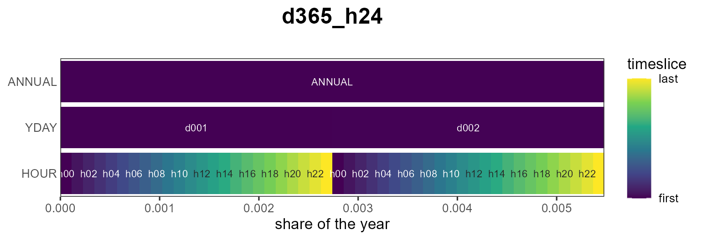
Subset view
A reduced calendar can be shown against a full reference calendar:
pass the full one as reference. The slices present in the
subset are filled; the rest are left empty.
autoplot(calendars$d365_h24_subset_1day_per_month,
reference = calendars$d365_h24)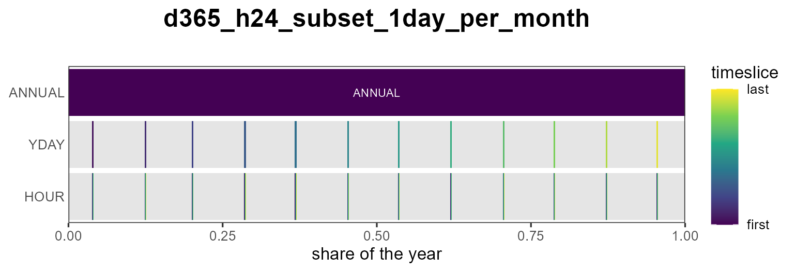
Styling
border outlines the rectangles (off by default so dense
rows read as a smooth gradient) and palette picks the
viridis option; and because the result is a ggplot you can keep
customizing it:
autoplot(calendars$season_dn, palette = "magma", border = "grey40") +
labs(title = "Four seasons, day/night") +
theme_minimal()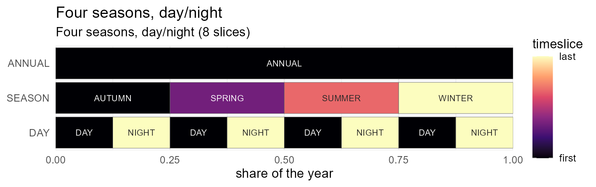
Heatmaps
autoplot() lays every slice out in one row per
timeframe. When a value is indexed by a two-dimensional
calendar — day-of-year × hour, month × hour — a heatmap
reads more naturally: plot_heatmap() puts the finest
timeframe on y, the next on x, and any coarser
levels into facets. The layout is taken from the calendar (pass it as
calendar =), or guessed from the slice names with
tsl_guess_format().
Here is a synthetic hourly load profile on the d365_h24
calendar (a daily cycle plus a seasonal swing). The diurnal band and the
winter/summer contrast are immediately visible:
cal <- calendars$d365_h24
tt <- cal@timetable
prof <- data.frame(
slice = tt$slice,
load = 50 + 30 * sin(2 * pi * (tsl2hour(tt$slice) - 6) / 24) +
15 * cos(2 * pi * tsl2yday(tt$slice) / 365))
plot_heatmap(prof, calendar = cal, value = "load") # x = YDAY, y = HOUR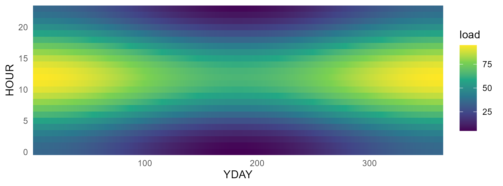
Facet a day-of-year format by "month" to get one
day-of-month × hour panel per month:
plot_heatmap(prof, value = "load", facet = "month") # 12 monthly panels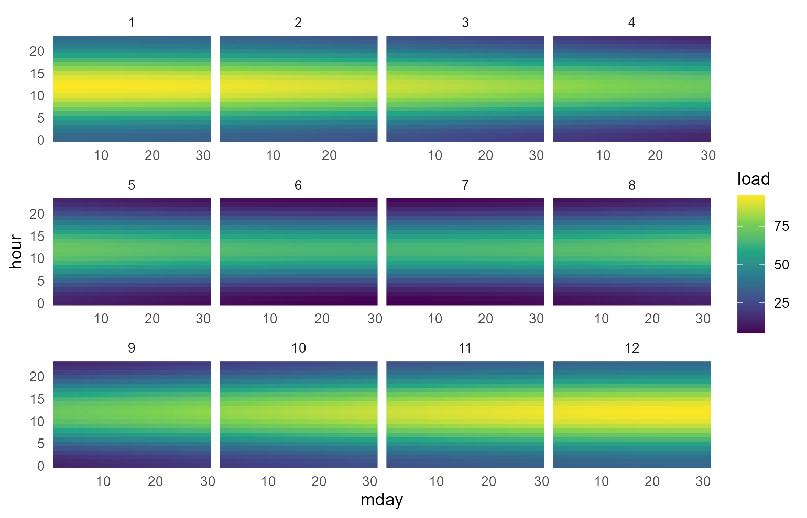
palette selects the viridis option and name
labels the colour bar, exactly as for autoplot().
From model objects
Any slice-indexed model data lays out the same way. Here
electricity demand and a solar capacity
factor from the packaged UTOPIA kit, on its season × hour
calendar (utopia_s4h24): pull the object with
getObject(), take one region (and, for demand, one year),
and pass the slice + value columns to
plot_heatmap(). The name argument carries the
value’s unit onto the colour bar.
repo <- utopia_modules$electricity$reg3$repo
wcal <- calendars$utopia_s4h24
DEM <- getObject(repo, name = "DEM_ELC", drop = TRUE)
dem <- subset(as.data.frame(DEM@dem), region == "R1" & year == 2050)
plot_heatmap(dem[, c("slice", "dem")], calendar = wcal, value = "dem", name = "PJ")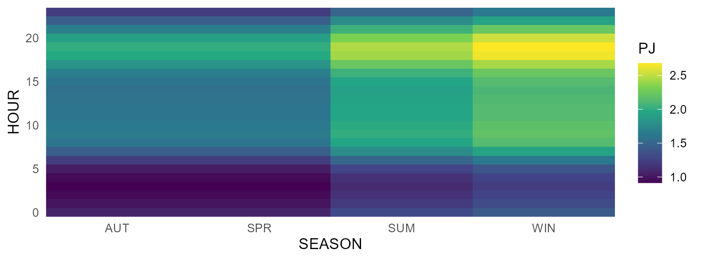
WSOL <- getObject(repo, name = "WSOL", drop = TRUE)
wsol <- subset(as.data.frame(WSOL@weather), region == "R1")
plot_heatmap(wsol[, c("slice", "wval")], calendar = wcal, value = "wval",
name = "capacity factor")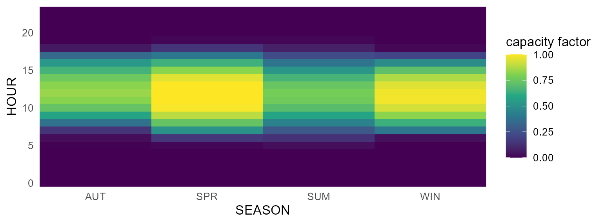
The weather heatmap is exactly what autoplot() draws for
a weather object directly — with line and area variants too
(see Weather below).
Commodities
For a commodity, autoplot() shows its
emission factors (@emis). Passing several commodities
compares their emission intensities side by side.
COA <- newCommodity("COA", desc = "Coal",
emis = data.frame(comm = "CO2", unit = "kt/GWh", emis = 0.33))
OIL <- newCommodity("OIL", emis = data.frame(comm = "CO2", unit = "kt/GWh", emis = 0.25))
GAS <- newCommodity("GAS", emis = data.frame(comm = "CO2", unit = "kt/GWh", emis = 0.18))
autoplot(COA) # a single commodity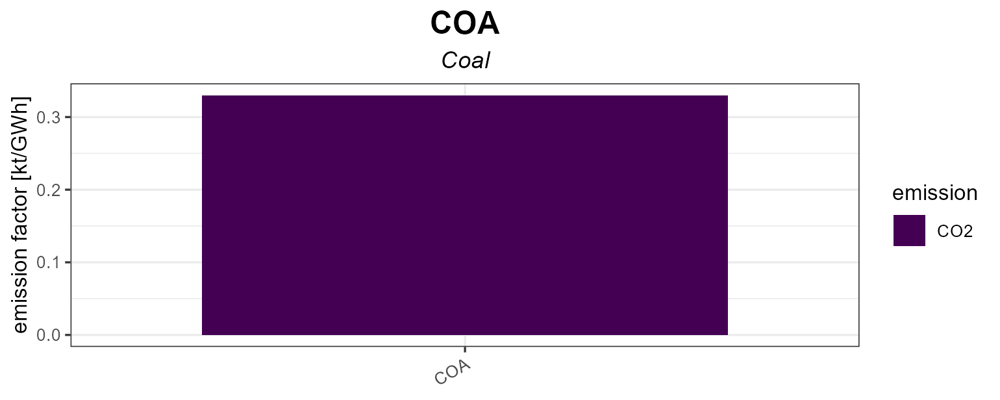
autoplot(COA, OIL, GAS) # comparison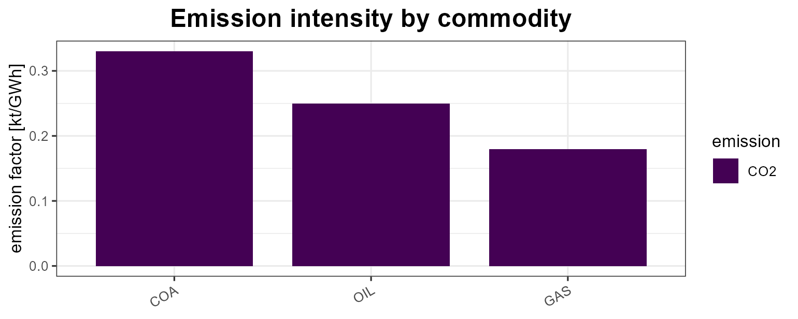
Supply, demand, import, export
These process objects are plotted by year: the
points are the given data and the
lines are the interpolation (both extracted with
getData()). Level parameters are faceted by their base name
so bounds and prices/costs keep separate y-scales.
SUP_COA <- newSupply(
name = "SUP_COA", commodity = "COA", unit = "PJ", region = "R1",
availability = data.frame(
region = "R1", slice = "ANNUAL",
year = c(2020, 2040, 2020, 2020),
ava.up = c(100, 200, NA, NA),
ava.lo = c(NA, NA, 10, NA),
cost = c(NA, NA, NA, 30)))
autoplot(SUP_COA)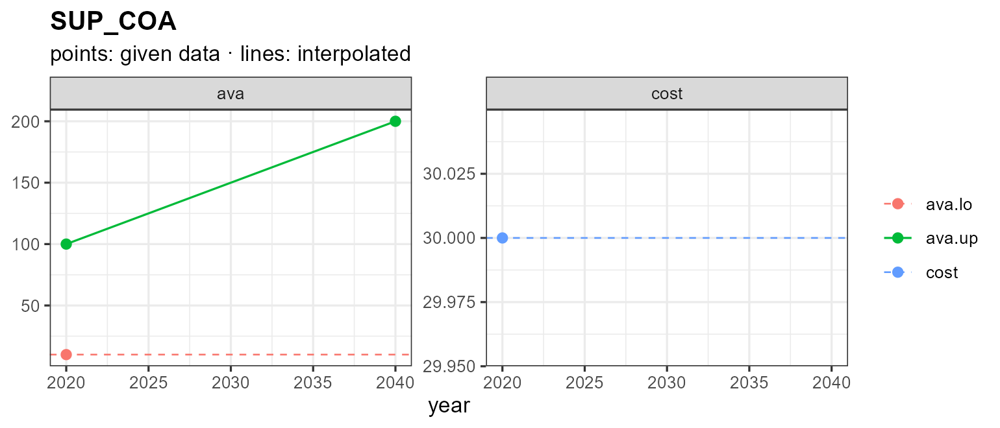
A single given value (or none) is drawn as a flat dashed line showing
the interpolation direction. Pass years to interpolate over
a specific horizon:
autoplot(SUP_COA, years = 2020:2050)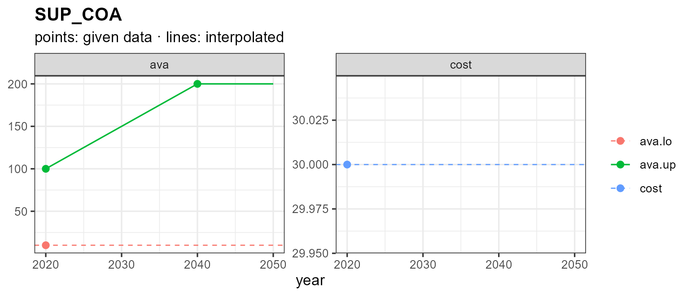
Demand, import and export follow the same pattern:
DEM_ELC <- newDemand(
name = "DEM_ELC", commodity = "ELC", unit = "GWh",
dem = data.frame(region = "R1", slice = "ANNUAL",
year = c(2020, 2030, 2050), dem = c(100, 150, 300)))
autoplot(DEM_ELC)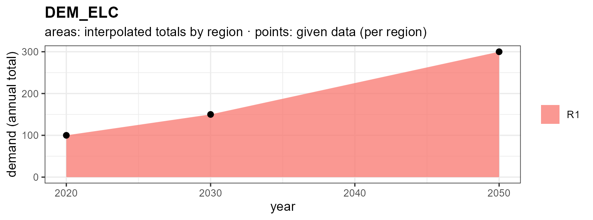
IMP_GAS <- newImport(
name = "IMP_GAS", commodity = "GAS",
imp = data.frame(region = "R1", slice = "ANNUAL",
year = c(2020, 2050), imp.up = c(50, 80), price = c(5, 9)))
autoplot(IMP_GAS)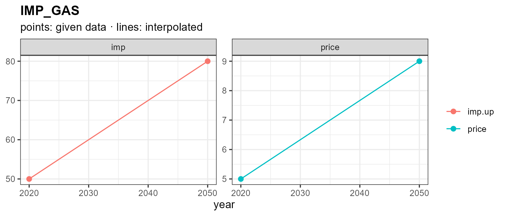
Weather
weather objects hold a sub-annual factor — a capacity /
availability factor — per region and slice. autoplot()
offers three views via type =: a calendar
heatmap (the default), and diurnal
line / area charts. Because the slice
layout (here season × hour) can’t be inferred from the slice names
alone, pass the model’s calendar; the value’s unit
(@unit, or "capacity factor" when unset)
labels the value axis — the fill legend for the heatmap, the y-axis for
line/area.
WSOL <- getObject(utopia_modules$electricity$reg3$repo, name = "WSOL", drop = TRUE)
wcal <- calendars$utopia_s4h24
autoplot(WSOL, calendar = wcal) # heatmap (default), faceted by region
The line view reads the diurnal shape directly — one line per season, the capacity factor on the y-axis:
autoplot(WSOL, type = "line", calendar = wcal)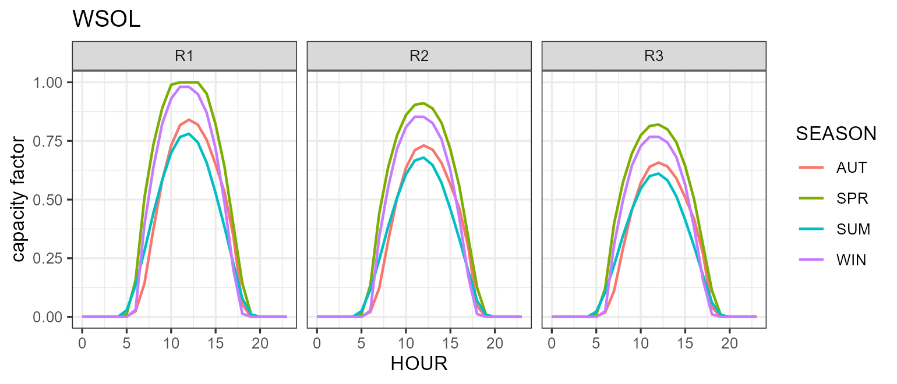
autoplot(WSOL, type = "area", calendar = wcal) # or filled areas
Notes
- Every method returns a
ggplot, so+ theme_*(),+ labs(),+ scale_*()etc. all work. -
plot()is available forcalendarandhorizonand produces the same figure asautoplot(). -
autoplot()also works on the result oflevcost()(levelized cost) — see?levcost— but that requires solving a small model, so it is not shown here. - See
?autoplot.calendar,?autoplot.commodity,?autoplot.supply, and?plot_weatherfor the full list of arguments.